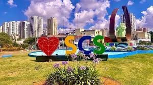

São Caetano do Sul
Cidade conhecida por sua excelente qualidade de vida, elevada IDH e transporte público gratuito, o que reforça
seu caráter social e urbano moderno, com boa infraestrutura e serviços eficientes
Pontos Turísticos
- Feiras livres e centros gastronômicos locais
- Museu Histórico de São Caetano (memória local)
- Sesc São Caetano (esporte, cultura e convivência)
- Teatro Paulo Machado de Carvalho (cultura e shows)
- Parque Eduardo Gomes (área verde para lazer)
